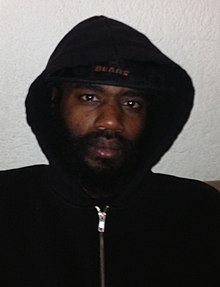

|  |
MC RIDEStefan Corbin Burnett is an American rapper, songwriter, and visual artist, better known under his stage name Ride. He is the frontman of experimental hip hop group Death Grips. He began his career in the late 1990s, before forming Death Grips with drummer Zach Hill and keyboardist Andy Morin in 2010. While within the group, Ride has garnered attention for his aggressive rapping style and cryptic lyrics. |
| Music | Documentation | Social Media |
|---|---|---|
| Spotify | Wikipidea |